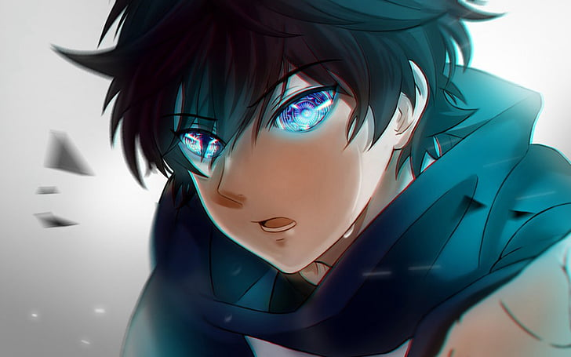

Anime (Japanese: アニメ, IPA: [aɲime] (listen)) is hand-drawn and computer-generated animation originating from Japan.
Outside of Japan and in English, anime refers specifically to animation produced in Japan.
[1] However, in Japan and in Japanese, anime (a term derived from a shortening of the English word animation) describes all animated works, regardless of style or origin.
Animation produced outside of Japan with similar style to Japanese animation is commonly referred to as anime-influenced animation.,
The earliest commercial Japanese animations date to 1917.
A characteristic art style emerged in the 1960s with the works of cartoonist Osamu Tezuka and spread in following decades, developing a large domestic audience.
Anime is distributed theatrically, through television broadcasts, directly to home media, and over the Internet.
In addition to original works, anime are often adaptations of Japanese comics (manga), light novels, or video games.
It is classified into numerous genres targeting various broad and niche audiences.
The options doesn't work sorry
Anime is a diverse medium with distinctive production methods that have adapted in response to emergent technologies.
It combines graphic art, characterization, cinematography, and other forms of imaginative and individualistic techniques.
[2] Compared to Western animation, anime production generally focuses less on movement, and more on the detail of settings and use of "camera effects", such as panning, zooming, and angle shots.
[2] Diverse art styles are used, and character proportions and features can be quite varied, with a common characteristic feature being large and emotive eyes.[3]
ACTION ANIME

One of the best anime in this genre,I would recommend is DEMON SLAYER
Here are the best action anime series of all time, ranked by fans everywhere.
From superhero anime, like One-Punch Man and My Hero Academia, to sword fighting anime, like Berserk and Bleach, the most popular action anime list features martial arts, car chases, and visually stunning fight animation.
Other good action animes include One Piece, Naruto, and The Seven Deadly Sins. More on Action Anime
One of the best anime in this genre,I would recommend is Toradora
Falling in love and struggling to progress towards—or maintain—a romantic relationship take priority, while other subplots either take backseat or are designed to develop the main love story.
The narrative focuses on the thoughts and emotions of the characters, illustrating the connections between them and explaining their reactions to events or conflict.
Almost always, the story ends happily and the couple is rewarded for their efforts with lasting love. More on Romance Anime
Well-made shonen anime (or shounen anime, as it is sometimes spelled) tend to be massive hits — just look at Attack on Titan or Dragon Ball.
It is by far one of the most popular "genres" of anime with countless numbers of manga adaptations and original series being created for fans.
Shonen is also a demographic rather than a traditional genre, so it covers a wide spectrum of shows.
In a category with countless anime to watch, it can be difficult to choose which series to get into.
Still, there are some shonen anime so excellent they stand above the rest and should be on every fan's must-watch list until they've seen them all.
What are the best shonen anime ever? More on Shounen Anime My favourite anime in this genre is ONE PIECE
SPORTS ANIME
Training for and participating in a sport take priority, with the goal of furthering one's athletic abilities—either to win a competition or achieve some social standing.
While the featured sport may be individual or team, the main cast will always overcome conflict through discussion and insights gained from other athletes or coaches.
This creates a general sense of collective support and achievement that is always present in Sports stories.
Contrast with Action where the narrative is on resolving conflict with one's physical power.
While both Action and Sports may focus on exciting action sequencies, the two genres are mutually exclusive. More on Sports Anime
My Favourite Anime in this genre are:HAIKYUU!!,
Diamond No Ace,
Kuroko no Basket